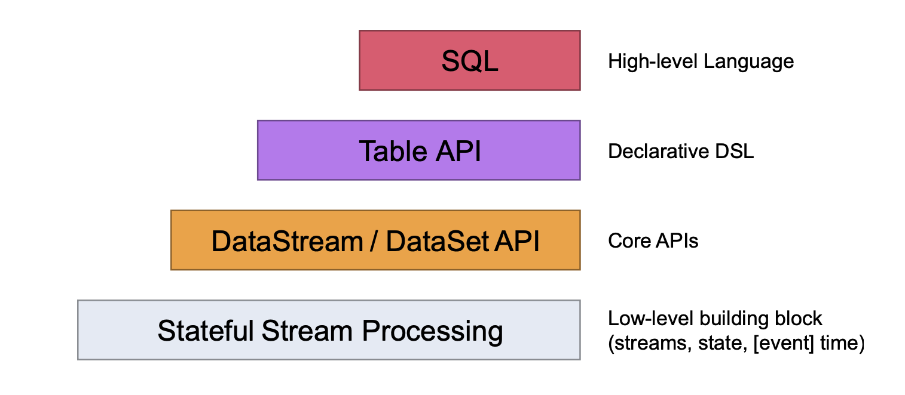
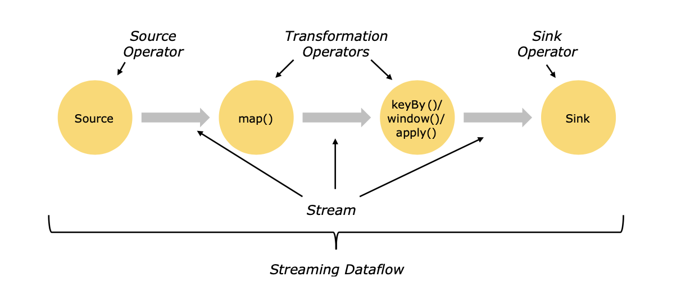
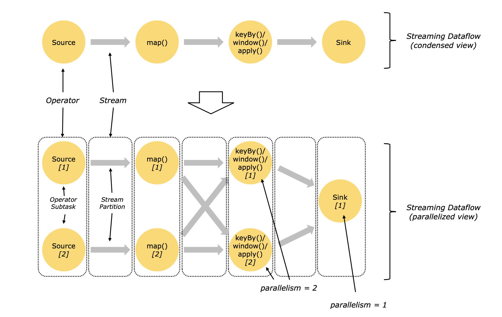

1.2 Flink编程模型
1.2.1 抽象层
先看下图：

- 最下面一层就是状态流，其余三层的处理主要是对stateful stream的封装，这一层的使用是最灵活的，可以进行复杂的数据处理
- 往上第二层是dataStream和dataSet的Core APIs，这是我们数据处理中最常用的部分，例如对流进行的转换、聚合、窗口和状态等的操作
- 再往上第三层是Table API，对它我们就像操作一张表一样操作它，可以进行分组聚合操作等，如果你懂sql语句，使用它是非常方便的，并且是非常直观的，它能与dataStream API进行无缝对接，相互转换
- 最上层是SQL API，它在语义和表达上与Table API非常相似，可以直接使用sql语句进行处理
1.2.2 streaming dataflow三板斧
整个flink处理流程可以分为三个部分，分别为Source，Transformation和Sink。

- Source表示为数据的输入，flink可以接入非常丰富的数据接口，例如socket，kafka，hdfs等，也可以自定义数据输入
- Transformation表示数据的转换，既对输入数据进行分析处理变换，例如map，flatmap等，大部分的工作量都是在这一块
- Sink表示数据的输出，既对结果的保存，可以sink到不同的数据库或文件中，例如mysql，kafka，hdfs等，当然也可以自定义sink方法
1.2.3 数据流并行
Flink是分布式并行处理数据的，一个stream会有一个或多个分区，然后通过算子对分区内的数据进行处理，每个算子又有一个或多个算子子任务(operator subtasks)，这些算子子任务共同处理这些数据，并且这些算子之间是相互独立的，执行于不同的线程之间。这些算子子任务的个数就是该stream的并行度(parallelism)，上官图：

数据传递有两种模式，一种是一对一(one-to-one)模式，这种模式数据一般会保持在同一个分区内，并且数据处理的顺序也是一样的，也就是说，在一对一模式中，如果来了一条新数据，这条数据在map1处理的顺序和在map2中处理的顺序是一样的，类似于上图中source[1]至map[1]阶段；另一种模式是重分区(redustribution)模式，这种模式一般是在数据有聚合操作的时候使用，既假设我要统计某一个key的总和，这个key分布在不同的分区，那首先就要把不同分区的相同的key全部合到同一个分区中，然后再在这个分区中求和，这类似于上图中map[1]至keyBy/window这个阶段。如果有了解spark的朋友理解这一段很容易，可以对比分析。
1.2.4 时间
Flink对时间语义支持的非常好，它支持三种时间语义，既event time，ingestion time和processing time，event time就是这条数据创建时候的事件，在flink处理该条数据之前就已经存在了，ingestion time就是该条数据刚进入flink处理的事件，而processing time是在每个算子中刚处理它的时间。
1.2.5 状态操作
Flink支持状态操作，比如说，我要使用流处理实时统计一个网站当天的访问量，那么在来了一条数据后总数量加一，再来一条数据这个总数量再加一，这样始终存在着这样一个总数量的状态进行实时更新。如果没有保存数据状态，那么来一条数据统计之后，再来一条数据的话前面保存的统计会清空掉，这样就无法准确统计访问的总数量。虽然spark也有状态操作的算子，但不如flink支持的好。